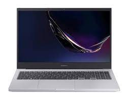
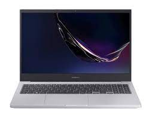
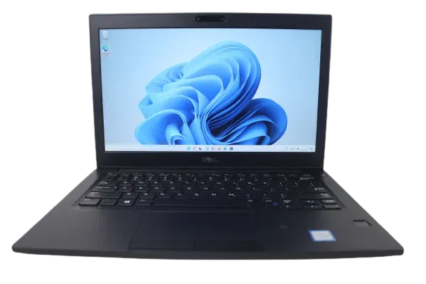
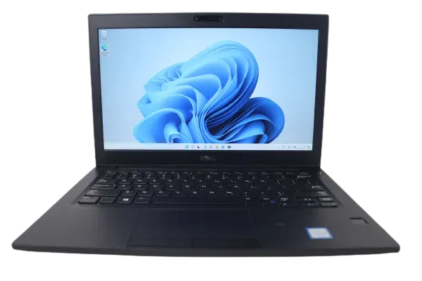

Notebooks
Netbooks são uma categoria menor, mais leve e mais barata de laptops. Quando surgiram, ao final de 2007, os netbooks se apresentavam como versões menores, mais leves, baratas e otimizadas de notebooks. Os netbooks possuem telas e teclados menores, além de poder computacional reduzido quando comparado a um laptop. Ao longo de sua evolução, apresentaram variação de tamanho (diagonal de tela) entre 5 e 12 polegadas. Algumas funcionalidades comuns aos notebooks foram omitidas, como o acionador de disco óptico. Até 2011, o crescimento da popularidade dos tablets (particularmente o iPad) - um formato diferente, no entanto com capacidades computacionais aperfeiçoadas e de menor custo de produção - resultou em quedas nas vendas dos netbooks.
 

 

Os ultraportáteis de alta performance, com teclado e tela tradicionais, também sofreram uma revolução com o MacBook Air de 11,6 polegadas, o qual não se sacrificou tanto em relação à performance, apesar de ser de produção consideravelmente mais cara. A Intel, em resposta ao Mackbook Air, promoveu os ultrabooks como um novo padrão de elevada mobilidade, o qual foi aclamado por alguns analistas por acertarem onde os netbooks acabaram errando. Como o resultado destes dois acontecimentos, os netbooks (em 2011) mantiveram o preço como seu ponto forte, perdendo em design (acabamento), facilidade de uso e portabilidade quando comparados aos tablets e ultrabooks.